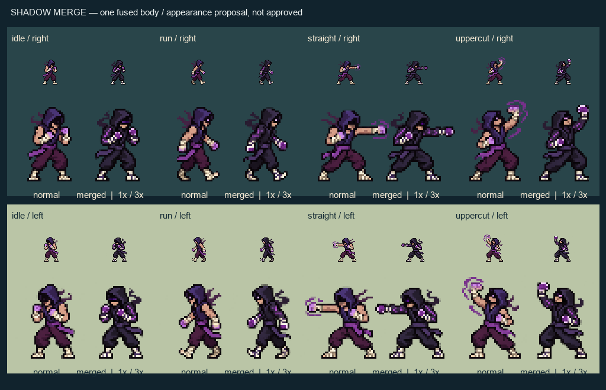

Shadow Merge — fused body
Appearance proposal only; not approved or packaged. These are four whole-body pose concepts, not completed animations.
Charcoal shadow replaces his exposed arms and flows through his wraps, violet seams and fists. The hood, human face and proportions remain recognisable. One connected body replaces the offset idle-shadow effect.
Try the candidate in the actual-map Lab — press Q to Merge. The opt-in preview uses concept poses following movement, attack and facing; the core and timings are unchanged.
Normal / Merge, 1× and 3×
